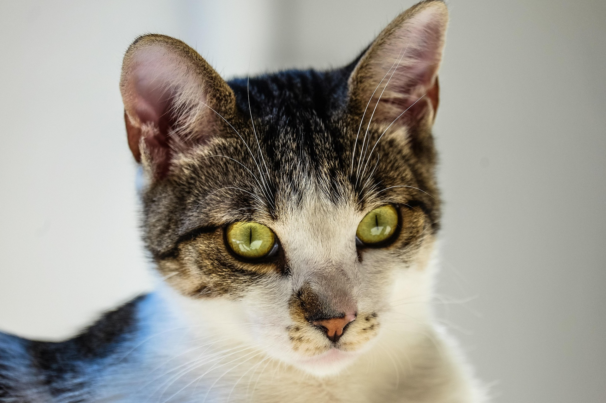

(Felis catus)
El gato es un mamífero doméstico conocido por su independencia y agilidad, que ha convivido con los humanos durante miles de años. Históricamente ha acompañado al ser humano en el control de roedores y como compañero afectivo. Gracias a su inteligencia y curiosidad, pueden aprender comportamientos, trucos y desarrollar vínculos con sus dueños. Dependiendo de su raza y cuidados, su esperanza de vida oscila entre 12 y 18 años, necesitando una alimentación adecuada, ejercicio, rascadores y atención veterinaria. Los gatos presentan una gran diversidad de tamaños, colores y temperamentos, lo que los hace ideales para diferentes tipos de familias y estilos de vida. Su agilidad y sentidos altamente desarrollados los convierten en excelentes cazadores y compañeros atentos en el hogar.
Características